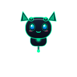

Một người bạn đồng hành AI đích thực ngay trên desktop của bạn — không phí thuê bao, không thu thập dữ liệu cá nhân, hoạt động mượt mà ngay cả khi không có kết nối internet.
POP Assistant ra đời từ mong muốn kết hợp sức mạnh của trợ lý ảo điều khiển bằng giọng nói tiếng Việt, các mô hình ngôn ngữ lớn (LLM) chạy cục bộ và khả năng tự động hóa máy tính toàn diện.
Hệ thống áp dụng kiến trúc Tri-Model AI thông minh: tự động phân luồng câu hỏi nhanh tới Liquid LFM 1.7B cục bộ siêu tốc, định tuyến xử lý hình ảnh tới Vision Qwen2.5-VL và giải quyết các bài toán lập trình hoặc suy luận phức tạp bằng DeepSeek R1/V3.
Cơ chế bộ nhớ dài hạn dựa trên cơ sở dữ liệu SQLite tối ưu chế độ WAL (Write-Ahead Logging), cho phép ghi nhớ các cuộc trò chuyện, thói quen và sở thích cá nhân của bạn xuyên suốt nhiều phiên làm việc mà không làm chậm hệ thống.
Tích hợp hoàn hảo giữa giao diện người dùng hiện đại, pipeline xử lý âm thanh thời gian thực và trí tuệ nhân tạo.
Nhận diện giọng nói tiếng Việt với độ chính xác cao qua Whisper / Parakeet, hỗ trợ từ khóa kích hoạt "Hey Pop", tổng hợp âm thanh mượt mà và thực thi mệnh lệnh hệ thống ngay tức thì.
Cơ chế phân luồng thông minh tự động lựa chọn mô hình tối ưu theo ngữ cảnh: phản hồi tức thì với LFM 1.7B, phân tích màn hình với Vision Qwen-VL, và giải quyết bài toán phức tạp bằng DeepSeek R1.
Thú cưng ảo sống động trên desktop với các trạng thái Đứng, Nói, Kéo thả, Nhạc, Ngủ và hệ thống Gacha khảm ngọc Rate Gem độc đáo theo độ hiếm.
Theo dõi liên tục mức sử dụng CPU, RAM, ổ cứng, dung lượng pin và nhiệt độ phần cứng theo thời gian thực. Cảnh báo thông minh khi quá tải.
Lưu trữ và truy xuất ngữ cảnh hội thoại bền bỉ. Chế độ WAL (Write-Ahead Logging) giúp đọc/ghi song song không gây giật lag giao diện.
Khởi chạy nhanh ứng dụng, điều khiển media player, phím tắt Alt x3 gọi Admin Panel, cùng Web Dashboard quản lý hoạt động qua FastAPI.
Kiến trúc phân tầng mô-đun hoá cao cấp, đảm bảo hiệu năng tối đa và tính ổn định tuyệt đối.
Mỗi nhân vật mang cá tính, giọng lồng tiếng Chibi riêng biệt và viên ngọc Rate Gem khảm nạp phát sáng tương ứng với phẩm cấp hiếm.
Nữ chỉ huy công nghệ với mái tóc bạch kim thanh lịch, mang phong thái cơ học hiện đại và cử chỉ quý phái.
Idol ảo tóc hồng rực rỡ với đôi tai mèo xinh xắn, luôn khuấy động màn hình làm việc của bạn bằng những điệu nhảy tràn đầy năng lượng.
Cô bé Pháp Sư Cube Mochi đội mũ trắng tinh nghịch, mang giọng nói Chibi trong trẻo cùng hiệu ứng ngủ bong bóng mũi đáng yêu.

Mèo cyber neon xanh lá nguyên bản, người bạn đầu tiên luôn trung thành đồng hành trên desktop từ những ngày đầu.
Dự án được duy trì và liên tục cải tiến với các cam kết tối ưu hóa hiệu năng máy tính.
Kiến trúc giao diện kính mờ Glassmorphism, Starfield Zero-CPU khi thu nhỏ, khay hệ thống mượt mà.
Xử lý âm thanh C++ Native, Wake-word "Hey Pop", chuyển đổi giọng nói tiếng Việt độ trễ thấp.
Tương tác kéo thả, nhảy theo nhạc, hệ thống triệu hồi Mascot gacha khảm ngọc Rate Gem độc đáo.
Ghi nhật ký WAL tối ưu I/O, giám sát phần cứng real-time, phím tắt Alt x3 gọi Admin Panel.
Tự động phân tích hình ảnh cửa sổ ứng dụng và ảnh chụp màn hình trực tiếp bằng Vision AI.
Truy xuất dữ liệu trực tiếp từ tài liệu PDF, Word, Excel cá nhân không cần đẩy lên đám mây.
Lựa chọn gói cài đặt nhị phân chạy ngay cho Windows hoặc tải mã nguồn để tự tuỳ biến.
Bản Portable đóng gói sẵn (Onefile), không cần cài đặt môi trường Python phức tạp.
Tải vềPhiên bản tối ưu hoá độc lập, tương thích các bản phân phối Ubuntu, Debian, Fedora.
Tải về